The Story of UX
1997
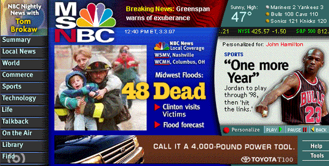
1999
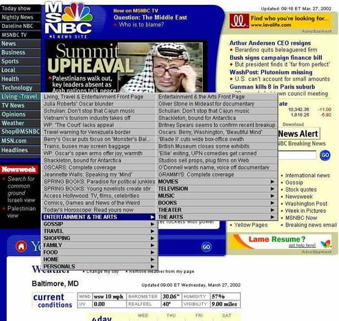
2000
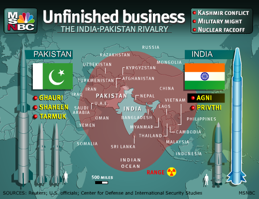
2001
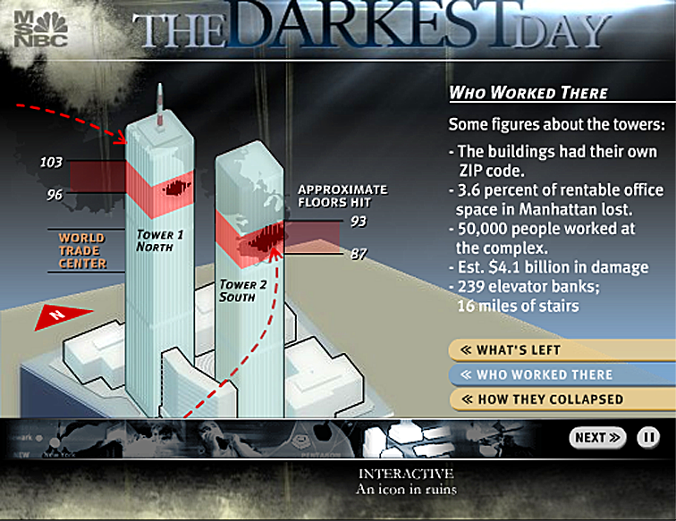
2002
 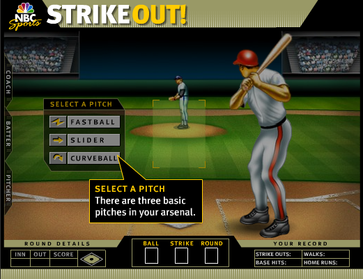
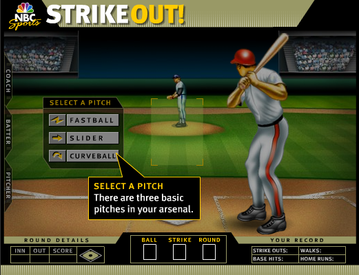
2005
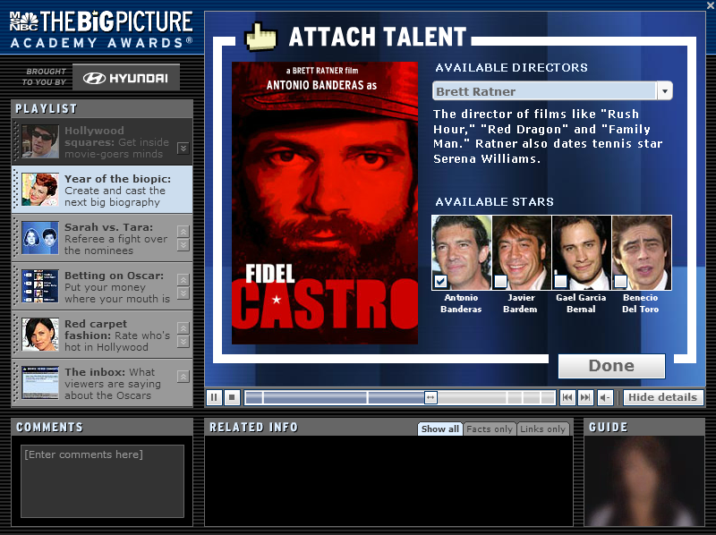
Troubled times
- Interactive storytelling proved difficult to scale
- Org structure got in the way of collaboration
- Developers in Technology
- Designers, Interactive Producers & Concepts
separate groups within Editorial
- Nobody dedicated to site design
Collision Course
2006
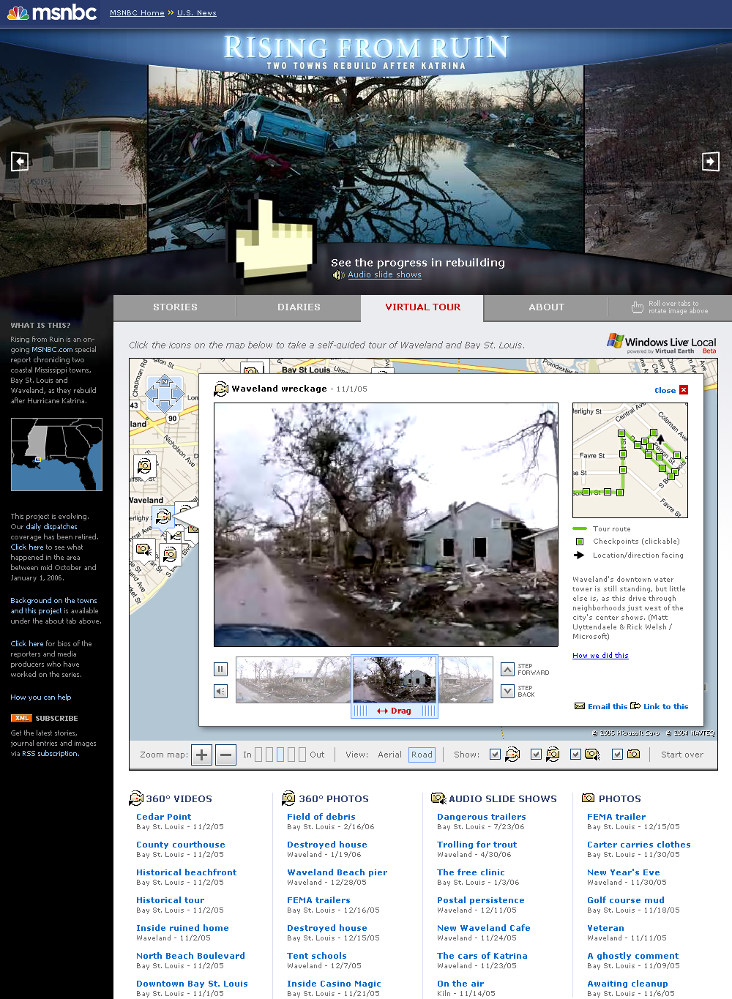
2008
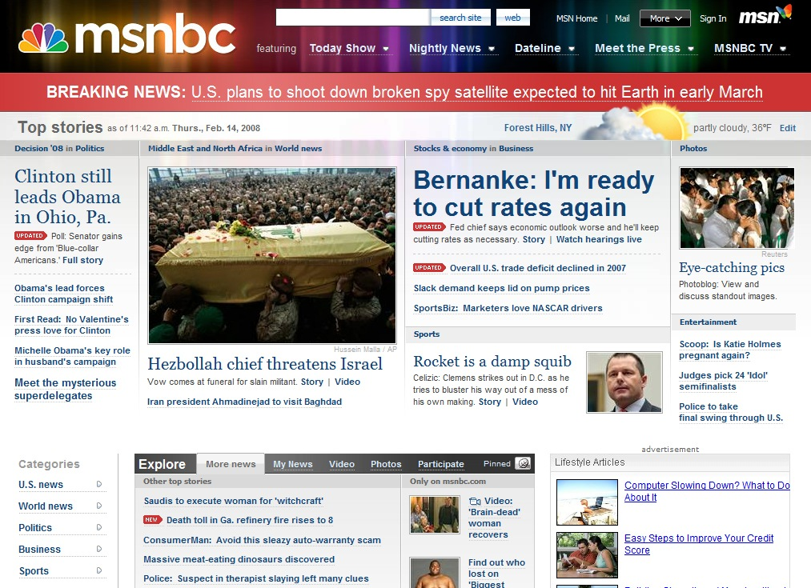
2008
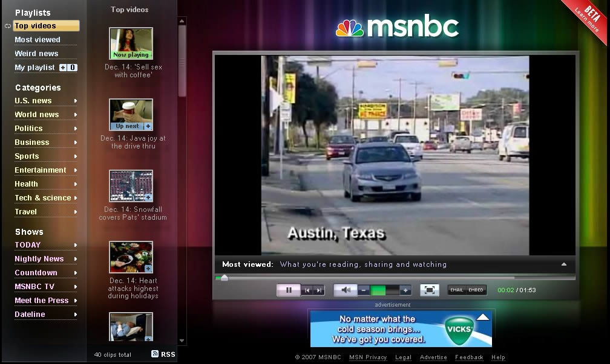
2008
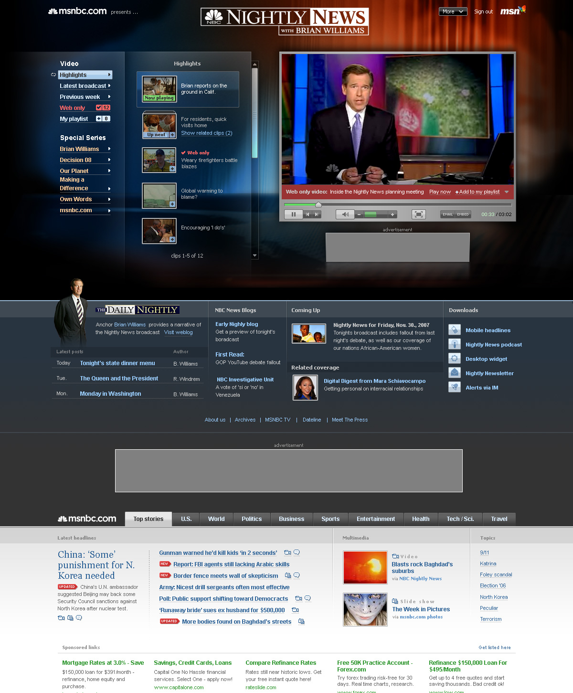
2008
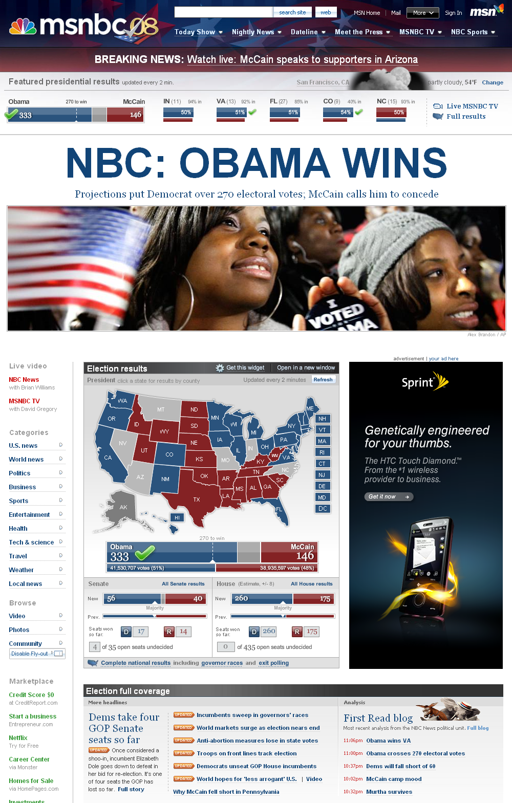
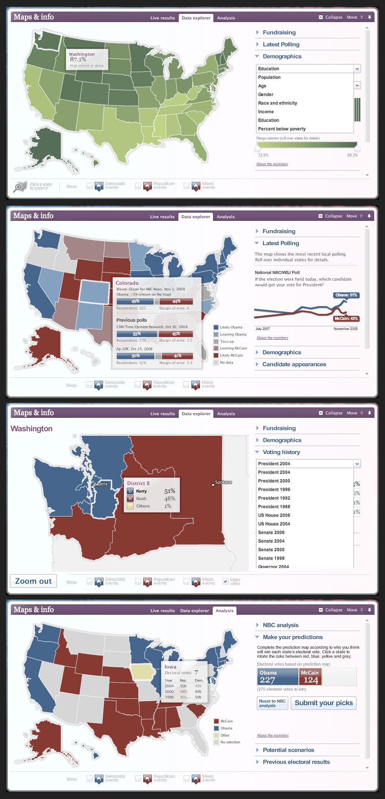
Faster, better ... and still falling behind
- Pace of industry change accelerated
- Technology and increasingly dev-oriented Creatives
struggled to collaborate internally
Creative Development
2010
{story pages}
2010
{blog pages}
2010
{mobile pages}
2011
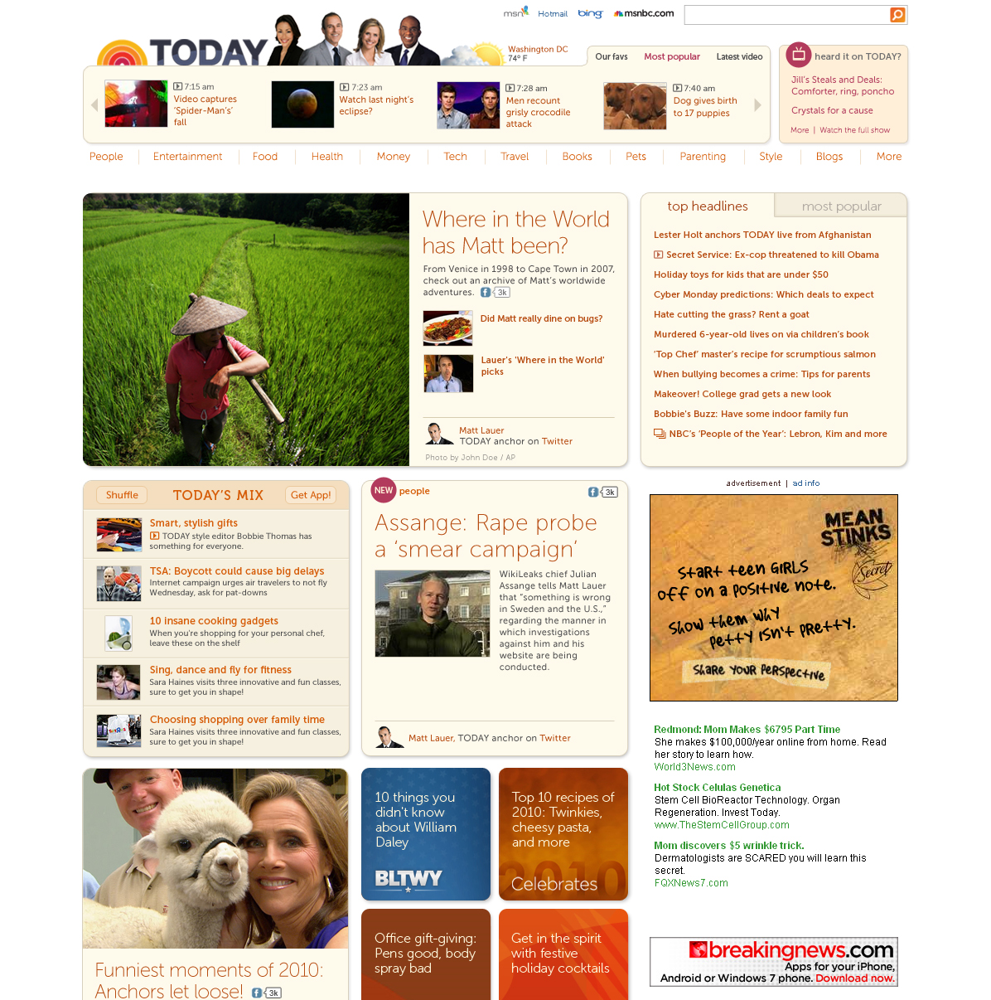
2011
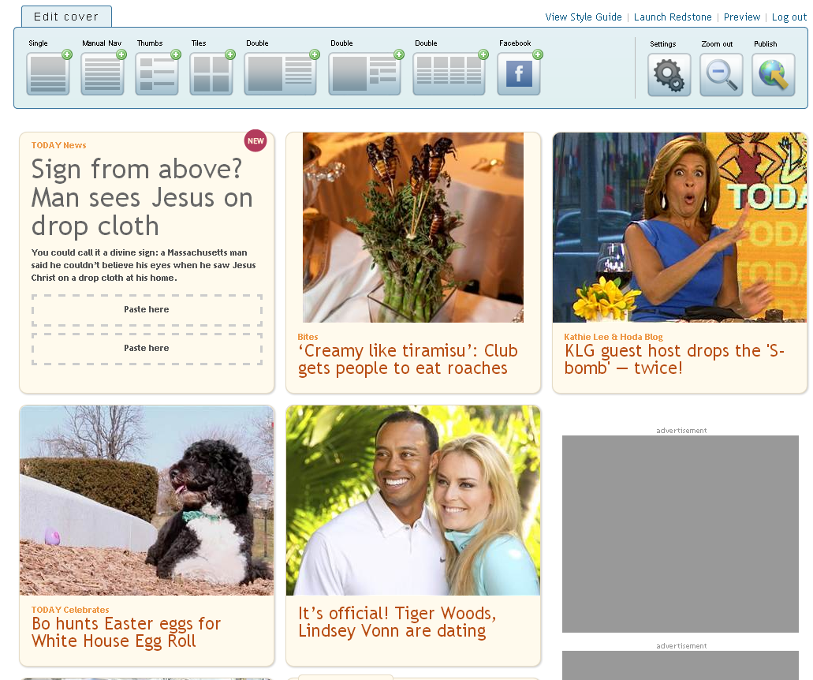
2011
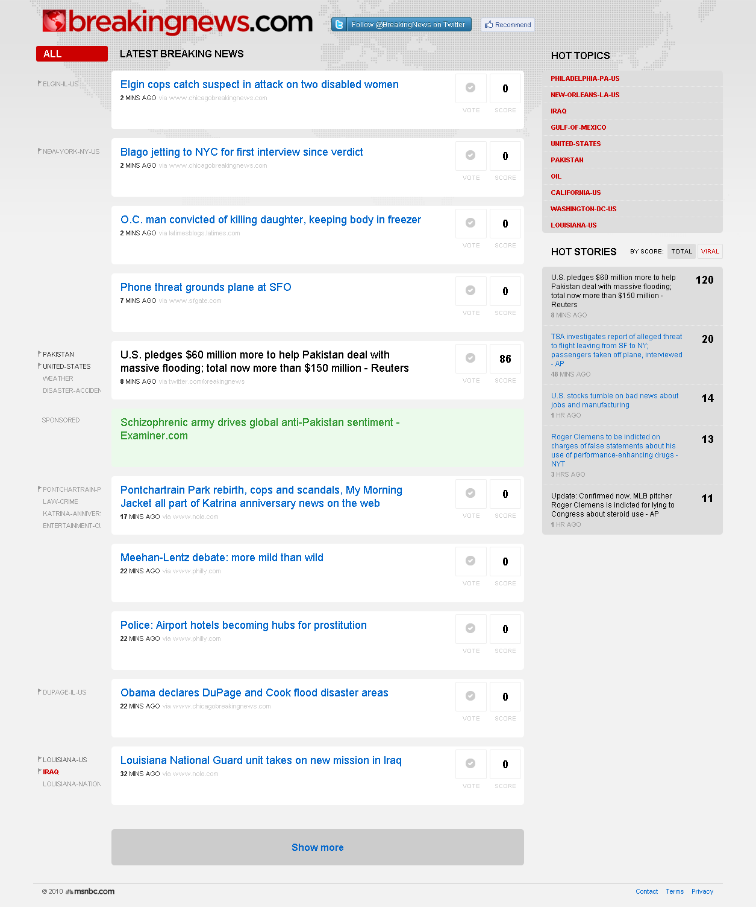
2012

2012-3
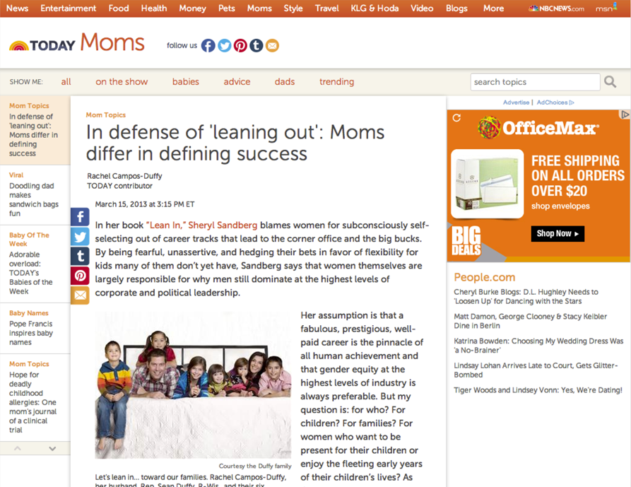
Leasons learned
- App-like experiences are the future of UX
- Building editorial tools distracts us from this
- Dedicated brand teams must lead product design
- Keeping up with change is a full-time job
Living on the edge
Single Page Applications
{example: Quartz?}
Build. Measure. Learn.
- Iterate on a framework that makes it easy to experiement.
- Prototype everything. Use real content & ads.
- Always be A/B testing. Make data-driven decisions.
The UX Group
- Design & front-end dev only, no more tools.
- Everyone codes, commits to monthly training.
- Brand teams lead site UX:
- Shezad Morani leads NBCNews.com UX
- Anne Van Wagener leads TODAY.com UX
- TBH to lead msnbc.com UX
- Shared Features team becomes R&D
- Colin Hicks & Chris Cast lead framework dev
- Gary Hebert manages team, leads UX research
- Gabriel Nanda leads the Ad UX team
Final thoughts
- Are redesign launches still relevant?
- How do we staff for data-based storytelling?